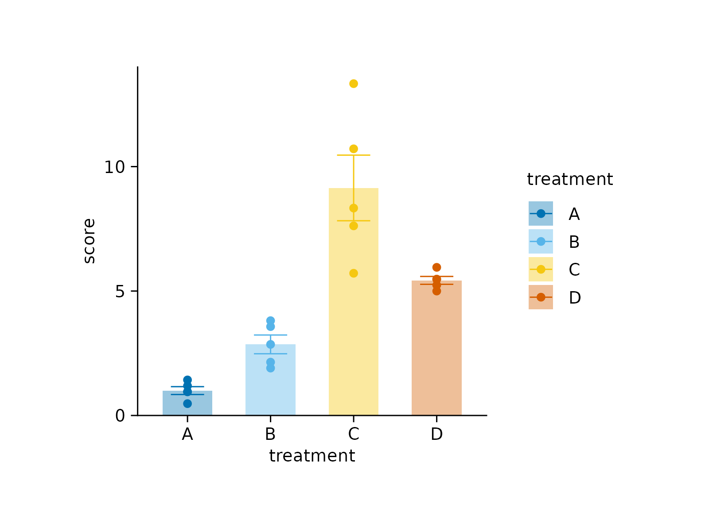
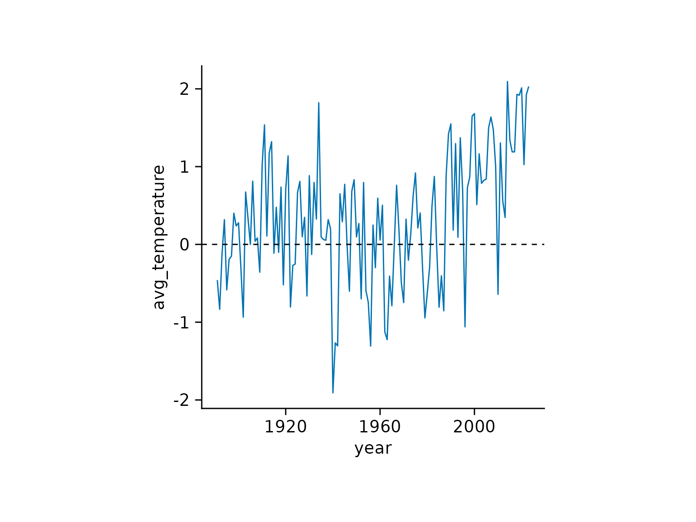
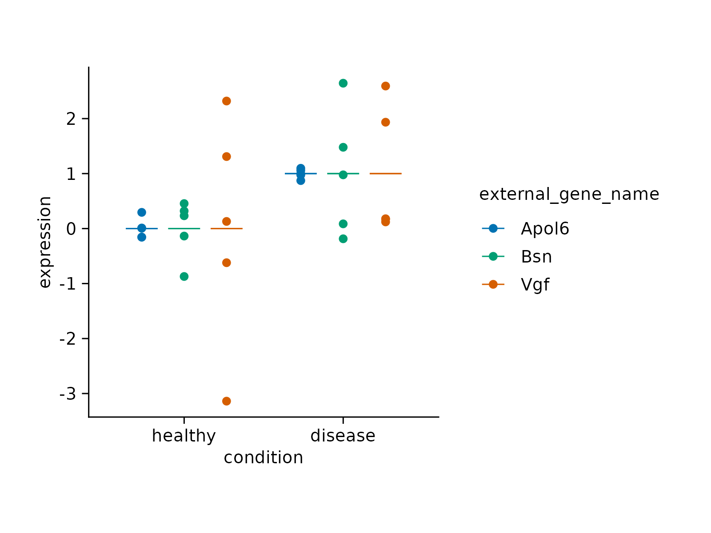
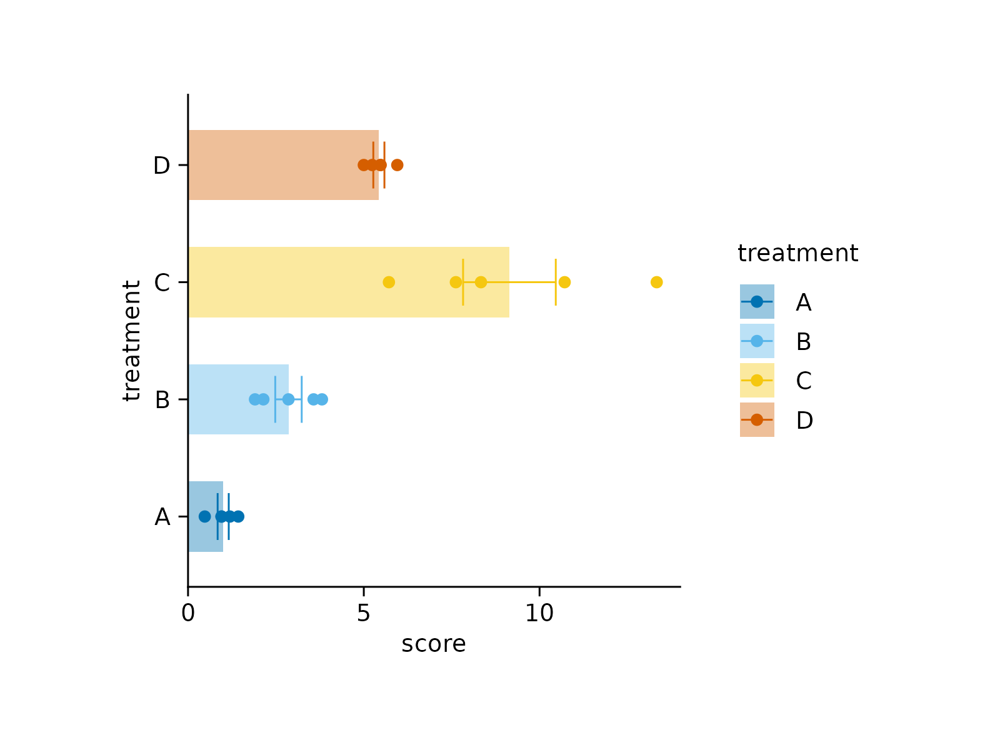
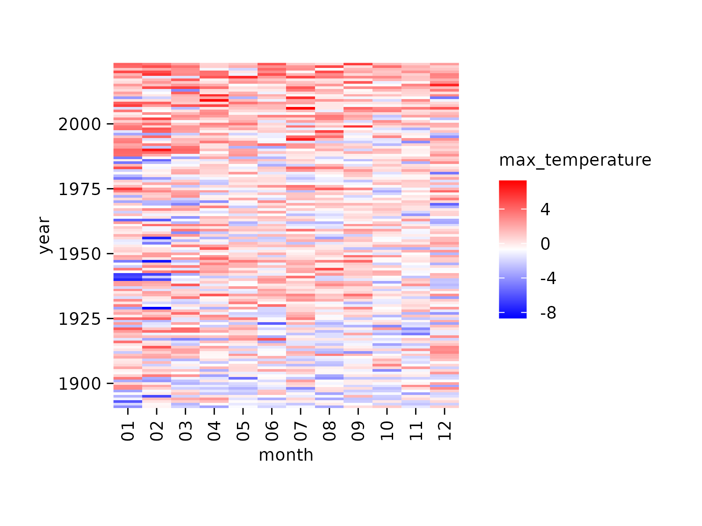

Normalize the values of a continuous x axis, y axis, or color variable
relative to reference rows. The reference rows are selected by logical
conditions, optionally within groups defined by by.
Usage
normalize_y(plot, one = NULL, zero = NULL, by = NULL, fun = mean)
normalize_x(plot, one = NULL, zero = NULL, by = NULL, fun = mean)
normalize_color(plot, one = NULL, zero = NULL, by = NULL, fun = mean)Arguments
- plot
A
tidyplotgenerated with the functiontidyplot().- one
A logical condition selecting the reference rows that should be mapped to
1. For example,day == 0ortreatment == "control".- zero
A logical condition selecting the reference rows that should be mapped to
0.- by
Variables to group by. The reference is determined separately within each group. For example,
by = subjectorby = c(gene, batch).- fun
A function used to combine the values of several matching reference rows into one reference value. Defaults to
mean.
Details
oneonly: the reference is mapped to1(fold change), \(v / v_{one}\).zeroonly: the reference is mapped to0(baseline subtraction), \(v - v_{zero}\).oneandzero: the two references define the0–1range, \((v - v_{zero}) / (v_{one} - v_{zero})\).The variable is overwritten in the plot data, so all layers, including statistical summaries like
add_mean_bar(), show the normalized values. Note that summaries are computed from the normalized values, e.g. the mean of the ratios rather than the ratio of the means.If several aesthetics map to the same variable (e.g.
y = score, color = score), normalizing one of them changes all of them.The axis or legend title is not changed. Use
adjust_y_axis_title(),adjust_x_axis_title(), oradjust_legend_title()to set a new title.When a condition matches several rows within a group, their values are combined with
fun. Missing values in reference rows are ignored.Groups without matching reference rows result in
NAvalues.
Examples
# Fold change relative to treatment A
study |>
tidyplot(x = treatment, y = score, color = treatment) |>
add_mean_bar(alpha = 0.4) |>
add_sem_errorbar() |>
add_data_points() |>
normalize_y(one = treatment == "A")

# Temperature anomaly relative to 1961-1990, separately for each month
climate |>
tidyplot(x = year, y = avg_temperature) |>
add_mean_line() |>
add_reference_lines(y = 0) |>
normalize_y(zero = year >= 1961 & year <= 1990, by = month)

# Scale each gene from healthy (0) to disease (1)
gene_expression |>
dplyr::filter(sample_type == "input") |>
dplyr::filter(external_gene_name %in% c("Apol6", "Bsn", "Vgf")) |>
tidyplot(x = condition, y = expression, color = external_gene_name) |>
add_mean_dash() |>
add_data_points() |>
reorder_x_axis_levels("healthy") |>
normalize_y(
zero = condition == "healthy",
one = condition == "disease",
by = external_gene_name
)

# Fold change on a horizontal plot
study |>
tidyplot(x = score, y = treatment, color = treatment) |>
add_mean_bar(alpha = 0.4) |>
add_sem_errorbar() |>
add_data_points() |>
normalize_x(one = treatment == "A")

# Heatmap of temperature anomalies relative to 1961-1990
climate |>
tidyplot(x = month, y = year, color = max_temperature) |>
add_heatmap() |>
adjust_colors(colors_diverging_blue2red) |>
normalize_color(zero = year >= 1961 & year <= 1990, by = month)
